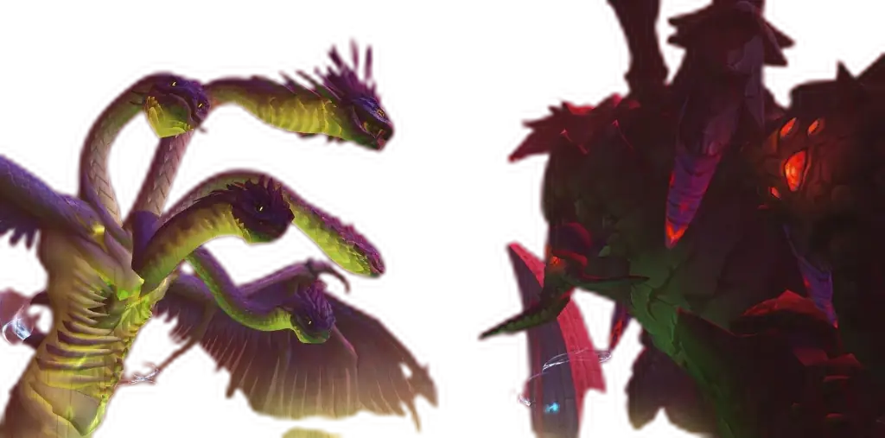

Forge your Meta Gear in
World of Warcraft: Midnight
The ultimate analytical suite to optimize stats, trinkets, and Top Gear combinations for Mythic+ and Raid with zero queues and real-time mathematical precision.
Architecture Built for Demanding Players
Pure mathematical optimization technology. All calculations occur instantly on your processor.
SimC Top Gear Full-Fidelity
Generate SimulationCraft scripts with exact bonus IDs, extra sockets, Midnight enchants, crafting missives, and Great Vault flags ready to paste into your simulator.
S2 Diminishing Returns
The engine applies official penalty brackets on secondary stats (Mastery, Haste, Crit, Versatility) to prevent inefficient stat saturation.
100% Private & Serverless
No accounts, sign-ups, or suspicious downloads required. Your inventory and setups are stored exclusively in your browser's private local storage.
Community Resources & Direct Links
We work with the most trusted sources across the World of Warcraft ecosystem to power WoWTopGear.
Bloodmallet
Mathematical simulations of trinkets, gems, and races computed using SimulationCraft.
Archon.gg
Live meta analysis of the world's highest Mythic+ runs and raid kill logs.
Wowhead
Official class guides, talent calculators, dungeon loot tables, and full database.
Raidbots
Cloud service to process SimC simulations and verify your WoWTopGear gear sets.
Ready to Perfect Your Character?
Load your character via the SimulationCraft addon or add your gear manually to discover your optimal setup in seconds.